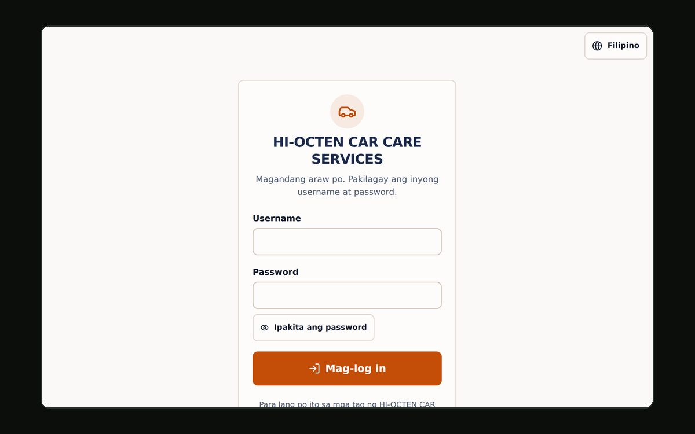

autocare/
A job-management system for HI-OCTEN CAR CARE SERVICES. It replaces the shop's paper notebook: seven short screens to record a finished job, a running total the owner can never mistype, and a printable receipt for every one.

$cat problem.md
A car care shop recorded every job in a notebook: the customer, the car, the parts, the labour, what was paid. Totals were added by hand at the counter, in front of the customer, which is exactly when arithmetic goes wrong. Nobody could answer "how much did we make last month" without turning pages, and a lost notebook was a lost year.
$cat solution.md
The whole system is shaped around one screen the owner uses fifty times a week: Record New Job. It is a seven-step wizard with one decision per screen, because a form with twenty fields on a phone at a counter is a form that gets filled in wrong.
- Home — today's jobs and income, this month's income, the unpaid total, and one very large button.
- Jobs — search and filter every job; open one to print or download its receipt as a PDF.
- Customers & vehicles — people, their cars, and a full service history per customer.
- Reports — daily and monthly income, most-used spare parts, top customers, CSV and JSON backup.
- Users, settings, activity log — staff accounts, receipt details, and a record of every login and every change.
$cat money.md
Every peso in the system flows through one file, lib/calc.ts. The
browser imports it to render the live total; the server imports the
same function to compute what it stores. They cannot disagree.
Two rules are enforced rather than merely intended. The total is never an
input — in the UI it is rendered text, not a form field. And
the server never trusts the client: the validation schema does
not even accept subtotal, total, balance
or status, so a client that posts them has them silently dropped and
the server recomputes everything from the line items. There is a test that fails
if that ever stops being true.
$cat security.md
- bcrypt at cost 12, a real password policy, lockout after five failed logins, and a rate limit on the login route.
- JWT sessions in httpOnly, secure, sameSite cookies with a 30-minute idle timeout — and re-checked against the database on every request, so disabling an account logs it out now, not in half an hour.
- Role-based access enforced in middleware and re-checked server-side inside every action, because a request can always be aimed straight at an endpoint.
- A per-request nonce-based Content-Security-Policy with no
unsafe-inline, generated in middleware in exactly one place. - Deletes go to a recoverable Trash; every change lands in an audit log.
$cat details.md
The interface ships in English and Filipino, switchable per user, because the people using it think in Filipino and a translated app is not a nice-to-have when it is someone's till. Receipts render to PDF in the browser. Continuous integration runs lint, typecheck, unit tests, a migration, a seed, database-backed integrity and access-control tests, and a production build on every push.
Public sign-up, online payments, SMS and multi-branch support are deliberately absent from v1 — but the schema leaves room for all of them, with notes on where.